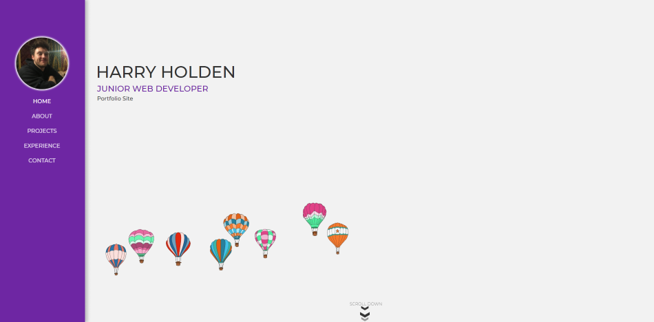
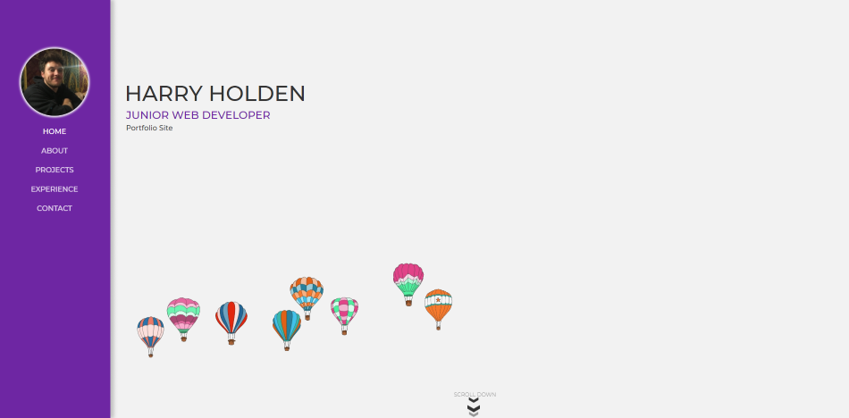

Patience, Perseverance and Community
A place of solace after a long hard day's work, a respite from the hustle and bustle of city life, an oasis in the pandemic's lockdown delirium,
that is allotment life and what a life it is! Aside from my passion pertaining to computers I've found joy in a non-silicon based and 100% natural
hobby that is vegetable growing (I prefer the term farming of course). I would advise it a hundred times over to anyone, it's great. And yes, I am
aware this makes me sound like I'm 60 years old but I don't care, when you take a bite of some sweetcorn freshly picked and barbequed within 10
minutes of harvesting, that sweet sweet taste will make any judgements evaporate into the summer air.
I have been an allotment owner now for 4 years, growing everything from cabbages to pumpkins (sorry did I mention tomatoes too?
always tomatoes...). The trials and tribulations are never ending but the rewards are exponentially greater.
It's a fantastic hobby that not only teaches you patience and perseverance but also drops you right at the heart of a community of
like-minded individuals eager to share growing tips and elbow grease, but more importantly their hard-grown vegetables (but only if you
share yours). It has some incredible benefits for both the body and mind and has been invaluable during the lockdown months.
I've said it already but will do again, try growing something, you won't regret it.
 
